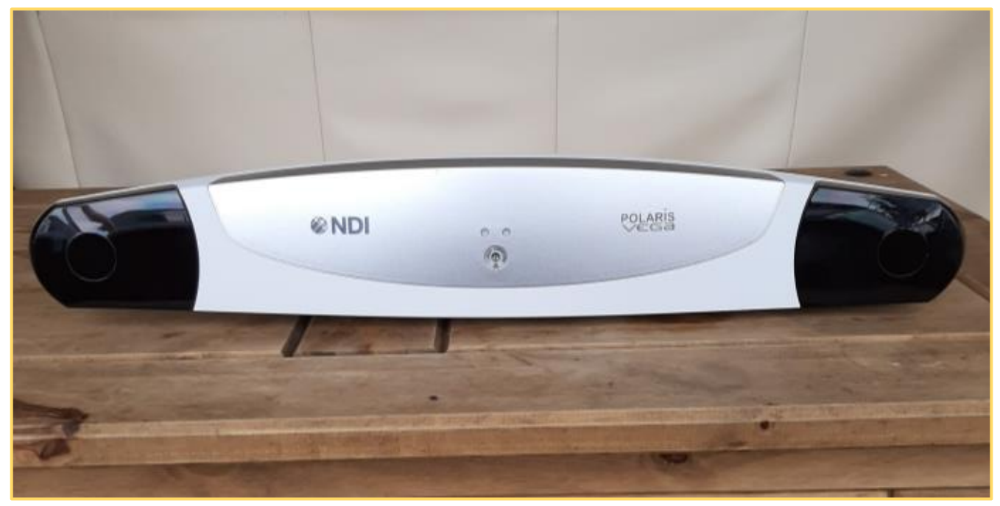
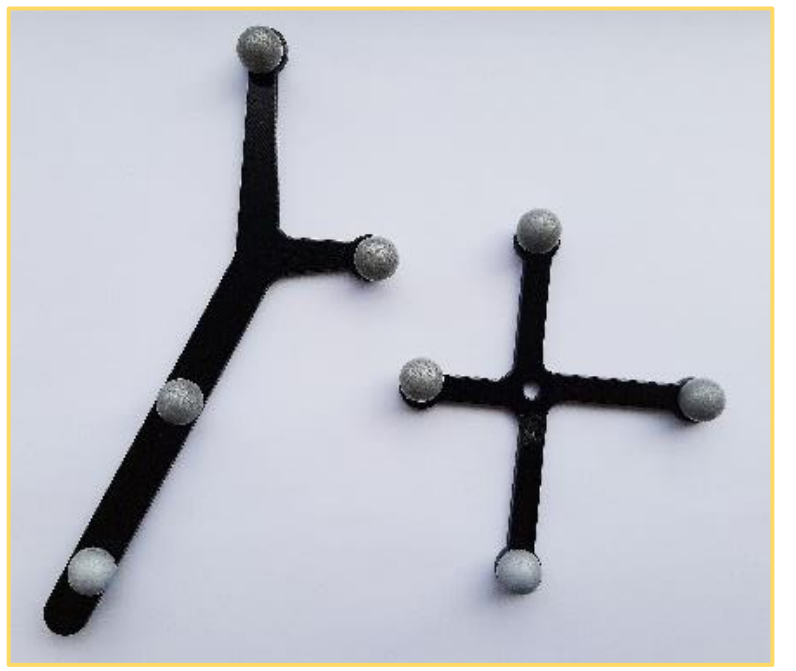

NDI Polaris Vega Setup + Plus Server#
written by Aoife Fitton
The NDI Polaris Vega is an optical tracking system for surgical navigation. The group uses the Vega for performing various measurement and registration tasks when evaluating magnetic tracking systems. Reflective markers are used to track objects within the defined field of view of the Vega camera. The optical nature of the device means that its precision and accuracy are unaffected by the presence of metal in the surrounding environment making it ideal for evaluating the performance of magnetic tracking systems in different environments
This tutorial describes how to set up the Vega system using both NDI’s standalone software and the open-source PLUS toolkit.
 {kind=link}
{kind=link}
NDI Vega camera unit and reflective markers.
Camera Setup#
Open the memory key that comes with the camera – install the windows/mac installer. You will install here NDI Configure, NDI Track and NDI Capture.
Once installing process completed, set up the hardware as shown in fig, using the Ethernet cables provided in the box. The computer connects by Ethernet to the PoE block (DATA IN) and the NDI Polaris is connected to the PoE block (DATA AND POWER OUT).
Open NDI Configure, open the file tab, select “connect to”, the camera named “P9-*” or “[cameras IP address]” should be listed here, selected it to connect to. You can browse the cameras functionality configuration in this window.
To test the tracking, open NDI Track.
Connect to the camera as described in step 3 if it is not already connected.
Go to File, add tool, browse files, NDI key folder, CombinedAPIsample, sroms – and select the tool you are using, 38, 39 or, 40. You should see this when you move the tracker in the appropriate volume (Note. The tracking will not work if you are too close to the camera, keep about three feet back to begin):
{kind=link}
NDI track interface. The blue dot indicates the tracked object. The bounding box establishes the 3D region in which the object may be tracked.#
Live Tracking with PLUS Toolkit#
The PLUS Toolkit https://plustoolkit.github.io/ is an open-source package for connecting to 3rd party navigation devices. The package creates a server to which end-user client applications such as Matlab and 3DSlicer can connect.
The following tuturial describes how to set up the PLUS toolkit with the NDI Polaris Vega.
Download and install Plus Server application from https://plustoolkit.github.io/download.html - see latest stable release.
Copy the sroms folder from the NDI key, CombinedAPIsample to
C:\Users\[user name]\PlusApp-2.8.0.20191105-Win32\config.Make sure the Vega is not being utilised by another software program. Check this by opening NDI Track, clicking connections, and seeing that the camera is not connected to that software.
Open Plus Server Launcher. Ensure the Device set configuration directory is the location of the config folder (
C:/…./ PlusApp-2.8.0.20190617-Win64/config). The Plus config file used is at the end of this document.From the drop-down menu select “PlusServer: NDI Vega tracker with passive markers”
Click “Launch server”. If the connection fails refresh the configuration directory and try again.
Sometimes Plus Server doesn’t connect on the first try or after first turning on the tracker. Click the green (or red) button in the bottom right corner to see the error messages.
{kind=link}
PLUS toolkit main screen.#
XML Config file for Vega#
1<PlusConfiguration version="2.1">
2<DataCollection StartupDelaySec="1.0" >
3<DeviceSet
4Name="PlusServer: NDI Polaris tracker with passive markers"
5Description="Broadcasting tool tracking data through OpenIGTLink
6For NDI Polaris passive marker starting kit: Tool (8700338), Stylus (8700340), Reference (8700449)"
7/>
8
9<!-- The IP Address and Port may need to be changed depending on the device configuration -->
10<Device
11Id="TrackerDevice"
12Type="PolarisTracker"
13NetworkHostname="169.254.61.83"
14NetworkPort="8765"
15ToolReferenceFrame="Tracker" >
16
17<!--The SROM files containing the definitions of the tools you wish to track. Each tool is given user
18defined ID, such as Tool, Stylus, Reference, depending on how the tool is being used-->
19<DataSources>
20<DataSource Type="Tool" Id="Tool" RomFile="NdiToolDefinitions/8700338.rom" />
21<DataSource Type="Tool" Id="Stylus" RomFile="NdiToolDefinitions/8700340.rom" />
22<DataSource Type="Tool" Id="Reference" RomFile="NdiToolDefinitions/8700449.rom" />
23</DataSources>
24
25<!-- Create an output channel and list the IDs of the DataSources we wish to put into this channel -->
26<OutputChannels>
27<OutputChannel Id="TrackerStream" >
28<DataSource Id="Tool"/>
29<DataSource Id="Stylus"/>
30<DataSource Id="Reference"/>
31</OutputChannel>
32</OutputChannels>
33</Device>
34
35<!-- Create an virtual capture device to save the streamed data to a file in the background -->
36<Device
37Id="CaptureDevice"
38Type="VirtualCapture"
39BaseFilename="RecordingTest.igs.nrrd"
40EnableFileCompression="TRUE"
41EnableCapturingOnStart="TRUE" >
42<InputChannels>
43<InputChannel Id="TrackerStream" />
44</InputChannels>
45</Device>
46
47<!-- Create a user defined transformation matrix and apply it to the Stylus. Typically this
48tranform is obtained from a Pivot Calibration (see tutorial). For the stylus, this transform establishes
49the location and orientation of the tip relative to the tracked origin of the reflective markers on the stylus. -->
50</DataCollection>
51<CoordinateDefinitions>
52<Transform From="StylusTip" To="Stylus"
53Matrix="
541 0 0 0
550 -1 0 0
560 0 1 0
570 0 0 1"
58Error="0.554951" Date="012617_105449" />
59</CoordinateDefinitions>
60
61
62<!-- Create an OpenIGTLink server to stream data to connected clients. -->
63<PlusOpenIGTLinkServer
64MaxNumberOfIgtlMessagesToSend="1"
65MaxTimeSpentWithProcessingMs="50"
66ListeningPort="18944"
67SendValidTransformsOnly="true"
68OutputChannelId="TrackerStream" >
69<DefaultClientInfo>
70<MessageTypes>
71<Message Type="TRANSFORM" />
72</MessageTypes>
73<TransformNames>
74<!-- The transform StylusTipToReference is chosen as the only output, where the Reference is defined by
75another reflective marker object defined at the beginning of this config file. If you wish to get
76transform relative to the Vega camera's own coordinate system then StylusTipToTracker would be used instead, since Tracker is defined as the world origin at the top of the config file. -->
77<Transform Name="StylusTipToReference">
78</TransformNames>
79</DefaultClientInfo>
80</PlusOpenIGTLinkServer>
81
82</PlusConfiguration>